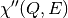

directtools is a Python module for quickly plotting standardized  color fill plots as well as line profiles (cuts) in constant
color fill plots as well as line profiles (cuts) in constant  and
and  . The module also provides a few utility functions for inspecting and manipulating the workspace.
. The module also provides a few utility functions for inspecting and manipulating the workspace.
For a general introduction on using matplotlib with Mantid, see this introduction
The input workspaces are expected to have some specific sample logs, namely instrument.name, Ei, run_number, start_time, sample.temperature.
Examples of some key functionality of directtools is presented below. For a full reference of all available function and classes, see the Reference section below.
The default parameters for directtools.plotSofQW() give a view of the workspace around the elastic peak with sensible limits for the axes and intensity:
import directtools as dt
from mantid.simpleapi import *
DirectILLCollectData(Run='ILL/IN4/084447.nxs', OutputWorkspace='data')
DirectILLReduction(InputWorkspace='data', OutputWorkspace='SofQW')
fig, ax = dt.plotSofQW('SofQW')
#fig.show()
(Source code, png, hires.png, pdf)

The , and intensity limits can be changed using the optional parameters. The utility functions directtools.validQ() and directtools.nanminmax() might be helpful when determining suitable ranges:
import directtools as dt
from mantid.simpleapi import *
DirectILLCollectData(Run='ILL/IN4/084447.nxs', OutputWorkspace='data')
DirectILLReduction(InputWorkspace='data', OutputWorkspace='SofQW')
EMin = -20.
QMax = dt.validQ('SofQW', EMin)[1]
VMax = 0.5 * dt.nanminmax('SofQW')[1]
fig, axes = dt.plotSofQW('SofQW', QMax=QMax, EMin=EMin, VMax=VMax)
#fig.show()
(Source code, png, hires.png, pdf)
 ¶
¶An important aspect of examining the workspace is to plot cuts at constant and . This can be done by directtools.plotconstQ() and directtools.plotconstE():
import directtools as dt
from mantid.simpleapi import *
import warnings
DirectILLCollectData(Run='ILL/IN4/084447.nxs', OutputWorkspace='data')
DirectILLReduction(InputWorkspace='data', OutputWorkspace='SofQW')
Q = 2.
dQ = 0.2
# plotconstQ produces a warning on some versions of numpy.
# The "with" statement catches this warning so that the automated
# builds don't fail.
with warnings.catch_warnings():
warnings.simplefilter("ignore", category=UserWarning)
fig, axes, cuts = dt.plotconstQ('SofQW', Q, dQ)
#fig.show()
(Source code, png, hires.png, pdf)

Any of the workspace, cut centre or cut width arguments can be a list instead. This enables data comparison:
import directtools as dt
from mantid.simpleapi import *
DirectILLCollectData(Run='ILL/IN4/084447.nxs', OutputWorkspace='data')
DirectILLReduction(InputWorkspace='data', OutputWorkspace='SofQW')
Q1 = 2.
Q2 = 3.
dQ = 0.2
fig, axes, cuts = dt.plotconstQ('SofQW', [Q1, Q2], dQ)
#fig.show()
(Source code, png, hires.png, pdf)
The directtools.plotconstQ() and directtools.plotconstE() functions use directtools.plotcuts() to do the actual line profiles and plotting. The profiles are made by the LineProfile v1 algorithm, and all three plotting functions return a list of the produced line profile workspace names.
If a line profile already exists, it can be plotted using directtools.plotprofiles(). This also accepts either a single line profile workspace or a list of workspaces enabling comparison:
import directtools as dt
from mantid.simpleapi import *
DirectILLCollectData(Run='ILL/IN4/084447.nxs', OutputWorkspace='data')
DirectILLReduction(InputWorkspace='data', OutputWorkspace='SofQW')
E1 = 8.
dE = 2.
cut1 = LineProfile('SofQW', E1, dE, 'Horizontal')
label1 = 'At E = {} meV'.format(E1)
E2 = E1 - 4.
cut2 = LineProfile('SofQW', E2, dE, 'Horizontal')
label2 = 'At E = {} meV'.format(E2)
fig, axes = dt.plotprofiles([cut1, cut2], [label1, label2], style='m')
axes.legend()
#fig.show()
(Source code, png, hires.png, pdf)
The density of states data calculated by ComputeIncoherentDOS can be plotted by the directtools.plotDOS() function. The function accepts a single workspace or a list of workspaces as its arguments. The example below shows a comparison of densities of states calculated from and  :
:
import directtools as dt
from mantid.simpleapi import *
DirectILLCollectData(Run='ILL/IN4/084447.nxs', OutputWorkspace='data')
DirectILLReduction(InputWorkspace='data', OutputWorkspace='SofQW', OutputSofThetaEnergyWorkspace='SofTW')
dosFromStw = ComputeIncoherentDOS('SofTW')
dosFromSqw = ComputeIncoherentDOS('SofQW')
fig, axes = dt.plotDOS([dosFromStw, dosFromSqw], labels=[r'from $S(2\theta, E)$', r'from $S(Q,E)$'])
#fig.show()
(Source code, png, hires.png, pdf)

directtools.SampleLogs is a convenience class to import the sample logs of a workspace into a ‘struct’ like object in Python:
import directtools as dt
from mantid.simpleapi import *
DirectILLCollectData(Run='ILL/IN4/084447.nxs', OutputWorkspace='data')
DirectILLReduction(InputWorkspace='data', OutputWorkspace='SofQW')
# Works on any workspace, not just S(Q,E).
logs = dt.SampleLogs('SofQW')
print(logs.instrument.name)
print(logs.run_number)
Output:
IN4
84447
A convenience class to access the sample logs of mantid.api.MatrixWorkspace.
Upon initialization, this class adds the sample logs as data attributes to itself. The attributes get their names from the logs. Log names containing dots result in nested log objects. Thus, if a workspace contains logs 'a' and 'b.c':
logs = SampleLogs(workspace)
# This is equivalent of calling workspace.run().getProperty('a').value
logs.a
# This is equivalent of calling workspace.run().getProperty('b.c').value
logs.b.c
Initialize a SampleLogs object. Transform sample log entries from workspace into attributes of this object.
| Parameters: | workspace (mantid.api.MatrixWorkspace) – the workspace from which to extract the sample logs |
|---|
Return slicing for a 2D numpy array limited by given min and max values.
| Parameters: |
|
|---|---|
| Returns: | a tuple of two slice objects, the first one for vertical dimension, the second for horizontal. |
Return a dictionary of directtools default matplotlib rc parameters.
| Returns: | a dict of default matplotlib rc parameters needed by directtools |
|---|
Convert to susceptibility .
 < zeroEnergyEpsilon is set to 0
< zeroEnergyEpsilon is set to 0| Parameters: |
|
|---|---|
| Returns: | a mantid.api.MatrixWorkspace containing |
Return min and max intensities of a workspace ignoring NaNs.
The search region can be limited by horMin, horMax, vertMin and vertMax.
| Parameters: |
|
|---|---|
| Returns: | a tuple containing the minimum and maximum |
Plot line profiles at constant energy transfer from workspace.
Creates cut workspaces using LineProfile v1, then plots the cuts. A list of workspaces, constant energy transfers, or cut widths, or any combination thereof can be given as parameters.
The last entry in the returned tuple is a list of cut workspace names. This will be an empty list is keeCutWorkspaces is set to False as the workspaces will not appear in the ADS.
| Parameters: |
|
|---|---|
| Returns: | A tuple of (matplotlib.Figure, matplotlib.Axes, a list of names) |
Plot line profiles at constant momentum transfer from workspace.
Creates cut workspaces using LineProfile v1, then plots the cuts. A list of workspaces, constant momentum transfers, or cut widths, or any combination thereof can be given as parameters.
The last entry in the returned tuple is a list of cut workspace names. This will be an empty list is keeCutWorkspaces is set to False as the workspaces will not appear in the ADS.
| Parameters: |
|
|---|---|
| Returns: | A tuple of (matplotlib.Figure, matplotlib.Axes, a list of names) |
Cut and plot multiple line profiles.
Creates cut workspaces using LineProfile v1, then plots the cuts. A list of workspaces, cut centres, or cut widths, or any combination thereof can be given as parameters.
The last entry in the returned tuple is a list of cut workspace names. This will be an empty list is keeCutWorkspaces is set to False as the workspaces will not appear in the ADS.
| Parameters: |
|
|---|---|
| Returns: | A tuple of (matplotlib.Figure, matplotlib.Axes, a list of names) |
Plot line profile workspaces.
Plots the given single histogram cut workspaces.
| Parameters: |
|
|---|---|
| Returns: | a tuple of (matplotlib.Figure, matplotlib.Axes) |
Plot density of state workspaces.
Plots the given DOS workspaces.
| Parameters: |
|
|---|---|
| Returns: | a tuple of (matplotlib.Figure, matplotlib.Axes) |
Plot a 2D workspace.
| Parameters: |
|
|---|---|
| Returns: | a tuple of (matplotlib.Figure, matplotlib.Axes) |
Return matplotlib figure and axes with Mantid projection.
The returned figure and axes have the proper projection to plot Mantid workspaces directly.
| Parameters: | kwargs (dict) – keyword arguments that are directly passed to matplotlib.pyplot.subplots(). |
|---|---|
| Returns: | a tuple of (matplotlib.Figure, matplotlib.Axes) |
Return a range at given energy transfer where is defined.
is undefined when Y = NaN
| Parameters: |
|
|---|---|
| Returns: | a tuple of ( |
Print some useful information from sample logs.
The logs are expected to contain some ILL specific fields.
| Parameters: | workspace (str or mantid.api.MatrixWorkspace) – a workspace from which to extract the logs |
|---|---|
| Returns: | None |
Category: Techniques
 ,
,  )
){kind=link}
{kind=link}
{kind=link}
{kind=link}
{kind=link}
{kind=link}
{kind=link}
{kind=link}
{kind=link}
{kind=link}
{kind=link}
{kind=link}